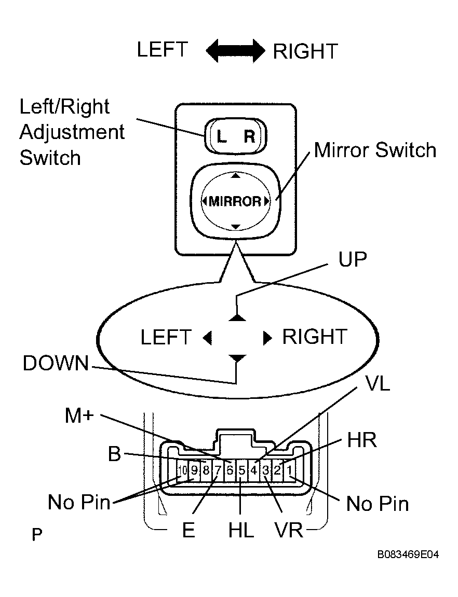

Outer Mirror Switch: Inspection
- INSPECT OUTER MIRROR SWITCH ASSEMBLY
- Select L on the left/right adjustment switch:
Measure the resistance of the switch.
Standard resistance (Left side)
TESTER CONNECTION SPECIFIED CONDITIONTester Connection Switch Condition Specified Condition 4 (VL) - 8 (B)
6 (M+) - 7 (E)UP Below 1 Ω 4 (VL) - 7 (E)
6 (M+) - 8 (B)DOWN 5 (HL) - 8 (B)
6 (M+) - 7 (E)LEFT 5 (HL) - 7 (E)
6 (M+) - 8 (B)RIGHT If the result is not as specified, replace the switch assembly.
- Select R on the left/right adjustment switch:
Measure the resistance of the switch.
Standard resistance (Right side)
TESTER CONNECTION SPECIFIED CONDITIONTester Connection Switch Condition Specified Condition 3 (VR) - 8 (B)
6 (M+) - 7 (E)UP Below 1 Ω 3 (VR) - 7 (E)
6 (M+) - 8 (B)DOWN 2 (HR) - 8 (B)
6 (M+) - 7 (E)LEFT 2 (HR) - 7 (E)
6 (M+) - 8 (B)RIGHT 
Courtesy of © TOYOTA, LICENSE AGREEMENT TMS1002If the result is not as specified, replace the switch assembly.
- Select L on the left/right adjustment switch: